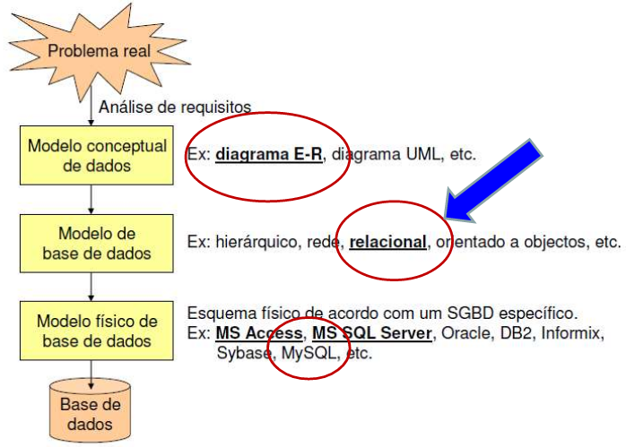
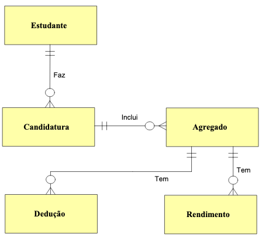
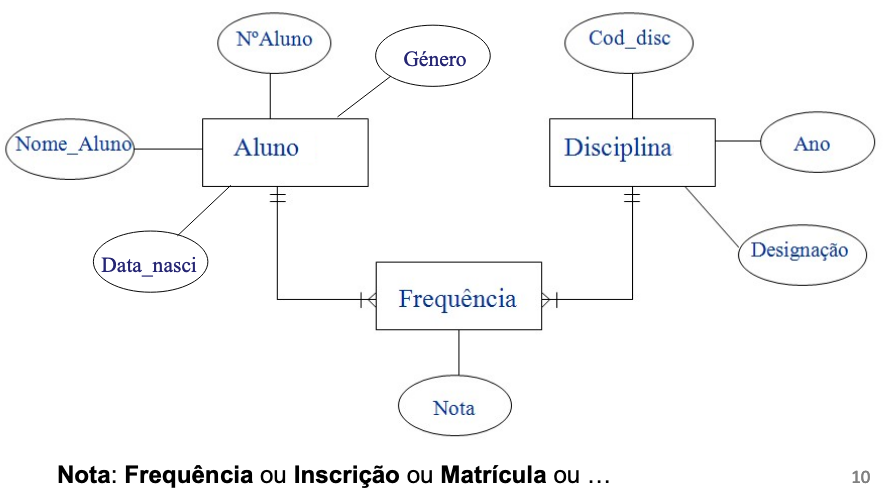
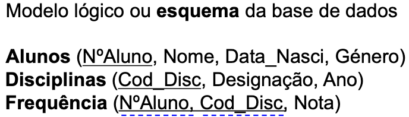
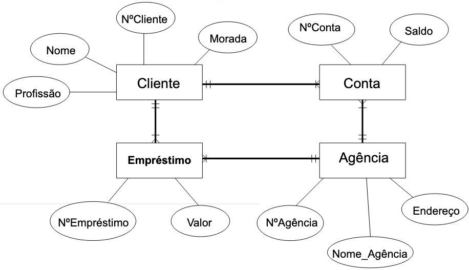
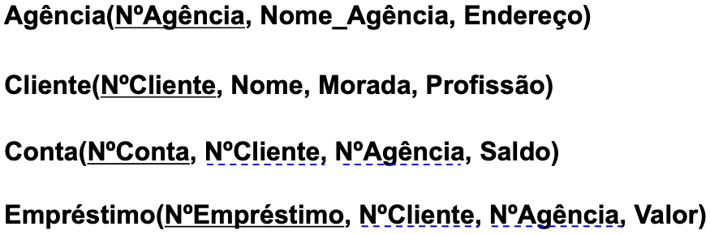

Database design and implementation using SQL
Table of Contents
1 Data modeling
- A modelação de dados justifica-se porque várias aplicações podem partilhar o mesmo conjunto de dados.
- A base de dados serve as aplicações já existentes, mas deve estar preparada para servir as aplicações que venham a ser desenvolvidas no futuro (dentro da organização).
- A identificação dos dados necessários depende dos requisitos de informação do Sistema de Informação (SI) que a base de dados pretende suportar (e não exclusivamente das necessidades de processamento de cada aplicação)
Etapas:
- Desenho conceptual: consiste na construção do modelo conceptual de
dados, o qual reflecte a percepção que os utilizadores têm dos dados,
sendo independente de qualquer implementação física.
- A abordagem mais utilizada são os diagramas DER (Diagramas de Entidades e Relacionamentos).
- Desenho lógico: Corresponde à transformação do modelo conceptual em
estruturas de dados que são implementáveis no SGBD (sistema de gestão
de bases de dados) seleccionado.
- O modelo relacional tem sido o modelo mais utilizado na construção de modelos lógicos de dados.
Desenho físico: Passa pela definição dos detalhes físicos que serão considerados na implementação do modelo lógico, e que são específicos do SGBD com que se vá trabalhar (MySQL nesta Unidade Curricular).

Figure 1: Modelacao de dados fig:modelacao-dados
2 E-R diagram
Os diagramas E-R são utilizados para descrever a estrutura dos dados, específica de uma dada aplicação ou SI.
- Componentes básicos:
- Entidades: constituem objectos ou conceitos de interesse no domínio de aplicação em causa (Ex: objeto do negócio, atores envolvidos, documentos que circulam na organização,…).
- Relacionamentos: representam associações entre entidades.
- Atributos: os atributos de uma entidade ou relação definem propriedades, assumindo valores dentro do contexto definido para o domínio de aplicação modelado (caraterizam a entidade).
- Representacao grafica:
- Entidades: retângulos
- atributos: elipses
- relacionamentos: linhas entre as entidades.
- Nos retângulos e nas elipses colocam-se os nomes das diferentes entidades e atributos.
- As linhas apresentam setas que definem o sentido da relação e cuja forma caracteriza o tipo de relacionamento existente entre duas entidades (há outras representações para os relacionamentos, com outras semânticas).
- cardinalidade: indica a quantidade no relacionamento:
- 1:1: um para um
- 1:M: um para muitos
- M:N: muitos para muitos
- opcionalidade:
- 0: opcional
1: obrigatório


3 Logical design
- Modelação lógica: transformacao do modelo conceptual de dados num modelo
de BD (neste caso relacional)
- Chave primária: Conjunto de atributos, eventualmente singular, que
quando conhecidos valores específicos dos mesmos, permite o acesso
unívoco à instância da relação (entidade no modelo concetual) a que
pertencem tais valores.
- Uma chave primaria nao pode ter conteudo nulo!!!
- Chave secundária: Atributo(s) que num relacionamento de “um para
muitos” é(são) chave primária na entidade do lado “um” no relacionamento,
e integra o conjunto de atributos da entidade no lado “muitos” desse
relacionamento.
- Se uma relação contiver uma chave estrangeira com conteúdo não nulo, então terá que existir um registo na relação onde é chave primária, com conteúdo não nulo!
- Regras de transformacao (nao necessariamente por esta ordem)
- Cada entidade no modelo conceptual dará origem a uma relação (tabela
aquando da criação da base de dados) no modelo relacional, cujos
atributos são os atributos da entidade no modelo concetual de dados;
- Nota: relação é diferente de relacionamento!
- Para cada relação, de entre as chaves candidatas que possam existir, selecionar a chave primária. As restantes passam a ser chaves secundárias;
- Recorrendo à cardinalidade dos relacionamentos estabelecidos no
modelo conceptual:
- Para cada relacionamento de muitos para muitos (M:N) cria-se uma nova relação (já temos no horizonte o modelo relacional de base de dados!) cujos atributos terão que incluir os atributos correspondentes às chaves primárias das relações envolvidas;
- Relacionamentos de um para um (1:1) tendem a dar origem a uma
única relação que, fundindo as entidades envolvidas nesse
relacionamento, será constituída pelos atributos de ambas.
- Quando não for possível, ou aconselhável, fazer a fusão das duas entidades, uma das duas relações deve importar a chave primária da outra relação;
- Relacionamentos de um para muitos (1:N) implicam a importação, para a relação correspondente à entidade (no MCD) do lado “muitos”, do(s) atributo(s) chave primária da relação que corresponde à entidade do lado “um”;
- Identificação das chaves primária e estrangeiras:
- Os atributos que constituem a chave primária de uma relação devem ser sublinhados a cheio;
- Os atributos que constituem as chaves estrangeiras de uma relação devem ser sublinhados a tracejado;
- Cada entidade no modelo conceptual dará origem a uma relação (tabela
aquando da criação da base de dados) no modelo relacional, cujos
atributos são os atributos da entidade no modelo concetual de dados;
- Exemplos: Utilizando as regras de transformação de modelos
conceptuais de dados em modelos relacionais, desenvolva os esquemas
relacionais correspondentes aos exercícios vistos anteriormente:
Contexto escolar;
 
Contexto bancário
 
- Chave primária: Conjunto de atributos, eventualmente singular, que
quando conhecidos valores específicos dos mesmos, permite o acesso
unívoco à instância da relação (entidade no modelo concetual) a que
pertencem tais valores.
4 Relational languages
- Baseadas na Álgebra Relacional e, sobretudo, no Cálculo Relacional
- Linguagens:
- SQL: mais representativa
- QBE (Query By Example):
- Marcas possíveis em QBE: P. I. D. U.
- a marca P. é usada para apresentação de resultados (Present)
- a marca I. é usada para inserção de tuplos (insert)
- a marca D. é usada para remoção de tuplos (Delete)
- a marca U. é usada para alteração de tuplos (Update)
- Calculo relacional de dominios
4.1 SQL
4.1.1 Intro
- Linguagem declarativa:
- especifica-se (declara-se) o que se quer fazer;
- nao se especifica como se faz (como em C ou noutra linguagem procedimental ou imperativa), apenas o que se pretende)
Formato base duma query SQL
-- A “where clause” pode não existir na interrogação (query). -- Daí surgir entre parêntesis retos. SELECT <colunas> FROM <tabelas> [WHERE <condição>] -- Exemplos -- 1. SELECT nome FROM alunos WHERE localidade = 'Guimarães' -- Algebra relacional -- Proj<nome>(Sel<localidade = 'Guimarães'> (Alunos) ) -- 2. SELECT nome FROM alunos -- Algebra relacional -- Proj<nome>( Alunos )
- Comandos:
- Para definir a BD: Ling. de Def. de Dados (LDD)
- Para manipular dados: Ling. de Manipulação de Dados (LMD)
- Interrogacao de BDs
- Update de BDs
- Para administrar a BD: segurança, optimizacao, etc.
4.1.2 DDL: Data definition language
- Comandos
- Criacao de BD
- Modificacao de BD
- Remocao de BD
- Tipos de dados (dominios) dos campos
- Constraints: Assegurar a integridade dos dados
- Restricoes de Integridade Implicitas
- Integridade de dominio
DEFAULT: indicacao dos valores por defeito, por omissao, a aplicar num campo:tipo varchar(3) DEFAULT 'ORD'NOT NULL: indicacao de que o conteudo dum campo nao pode ser nulo:nome varchar(100) NOT NULLUNIQUE: indicacao de que o conteudo dum campo nao pode ser repetido:nome varchar(100) UNIQUECHECK: impoe uma condição para o valor do campo ser aceite. Pode usar os operadores:- Relacionais:
, >, <, >, <=, <> ou != - Logicos: AND, OR, NOT
Outros: BETWEEN, IN, IS, LIKE
genero varchar(1) CHECK (genero = 'M' or genero = 'F') CREATE TABLE Professor( Id INTEGER NOT NULL, Nome CHAR(50) NOT NULL CHECK(Nome NOT LIKE '%Rui'), Idade INTEGER NOT NULL CHECK(Idade BETWEEN 0 AND 150), Sexo CHAR NOT NULL CHECK(SEXO IN ('M', 'F')), Salario FLOAT NOT NULL CHECK(Salario >= 0), Data_Nasc DATE NOT NULL, Data_Admi DATE NOT NULL, CHECK(Data_Admi > Data_Nasc) );
- Relacionais:
- Integridade ao nivel da entidade
- Cada relacao ou tabela (entidade) deve ter definida uma unica chave primaria
- Numa relacao ou tabela, um conteudo da chave primaria é unico
- A chave primaria nao pode ser nula
PRIMARY KEY: indica qual a chave primaria da tabela. Implica que o campo nao pode ser nulo e um conteudo desse campo tem que ser unico.
- Entidade referencial
- Conceito de chave estrangeira: atributos que nao sao chave primaria duma tabela, mas sao chave primaria noutra tabela
- Ao valor duma chave estrangeira deverá corresponder um valor da chave primária na tabela respectiva.
- Pode admitir o valor
null Restricao
FOREIGN KEY+REFERENCESCREATE TABLE Professor( Id INTEGER, Nome CHAR(50) NOT NULL CHECK(Nome NOT LIKE '%Rui'), BI NUMERIC NOT NULL UNIQUE, Morada CHAR(80), Cod_Postal NUMERIC(4) REFERENCES Postal(Codigo) Salario NUMERIC(10,2) NOT NULL CHECK(Salario >= 0), PRIMARY KEY (Id), FOREIGN KEY (BI) REFERENCES Seg_Social(BId), FOREIGN KEY (Nome, Apelido) REFERENCES Pessoa(Nome, Apelido), );
Pode definir-se a atualizacao das tabelas onde estao definidas as chave estrangeiras, i.e.,
UPDATEouDELETECREATE TABLE Funcionarios( ..., cod_dep CHAR(3), FOREIGN KEY (cod_dep) REFERENCES Departamentos (cod_dep) ON UPDATE CASCADE ON DELETE SET NULL, );
- Integridade de dominio
- Restricoes de Integridade Explicitas: regras impostas pelo
negocio ou contexto (ex. livros para adultos)
- Muitas podem ser implementadas com restricoes de dominio
- Outros so atraves de codigo aplicacional ou triggers na base de dados
CONSTRAINT: acrescenta restricoes que podem ser manipuladas directamente atraves do seu nome:CONSTRAINT chave_pr PRIMARY KEY(numero)
- Restricoes de Integridade Implicitas
LDD: Exemplo Completo:
CREATE TABLE CONTAS ( num_conta CHAR(10), tipo_conta CHAR(5), cod_agencia CHAR(3), cod_cliente CHAR(4) NOT NULL, saldo DECIMAL(10,2) NOT NULL, CONSTRAINT tipos_de_contas CHECK (tipo_conta IN ('ordem','prazo')), CONSTRAINT valor_saldo CHECK (saldo >= 10000), CONSTRAINT ch_prim_Contas PRIMARY KEY (num_conta), CONSTRAINT ch_estr_Agencias_Contas FOREIGN KEY (cod_agencia) REFERENCES Agencias (cod_agencia) ON UPDATE CASCADE ON DELETE SET NULL, CONSTRAINT ch_estr_Clientes_Contas FOREIGN KEY (cod_cliente) REFERENCES Clientes (cod_cliente) ON UPDATE CASCADE ON DELETE CASCADE ); CREATE TABLE Emprestimos ( num_emprestimo CHAR(5), cod_agencia CHAR(3), cod_cliente CHAR(4) NOT NULL, valor INTEGER NOT NULL, CONSTRAINT valor_emprestimo CHECK (valor BETWEEN 100000 AND 100000000), CONSTRAINT ch_prim_Emprestimos PRIMARY KEY (num_emprestimo), CONSTRAINT ch_estr_Agencias_Emprestimos FOREIGN KEY (cod_agencia) REFERENCES Agencias (cod_agencia) ON UPDATE CASCADE ON DELETE SET NULL, CONSTRAINT ch_estr_Clientes_Emprestimos FOREIGN KEY (cod_cliente) REFERENCES Clientes (cod_cliente) ON UPDATE CASCADE ON DELETE CASCADE ) ; CREATE TABLE Agencias ( cod_agencia CHAR(3), agencia VARCHAR(20) NOT NULL, localidade VARCHAR(10) NOT NULL, CONSTRAINT ch_candidata_Agencias UNIQUE (agencia), CONSTRAINT ch_prim_Agencias PRIMARY KEY (cod_agencia) ); CREATE TABLE Clientes ( cod_cliente CHAR(4), cliente VARCHAR(30) NOT NULL, profissao VARCHAR(10), localidade VARCHAR(10) NOT NULL, CONSTRAINT ch_prim_Clientes PRIMARY KEY (cod_cliente) ); /* Alterar estrutura de tabelas */ -- Adicionar coluna ALTER TABLE Clientes ADD COLUMN nacionalidade VARCHAR(15) DEFAULT 'portuguesa' [FIRST| AFTER <coluna>] ; -- Modificar coluna ALTER TABLE Clientes MODIFY COLUMN nacionalidade VARCHAR(25) ; -- Remover coluna ALTER TABLE Clientes DROP COLUMN nacionalidade ; /* Remover tabelas */ DROP TABLE Clientes;
4.1.3 DML: Data modeling language
- Comandos
Insert
/* ========== INSERT ============== */ -- INSERT INTO <tabela> [(<colunas>)] -- VALUES (<valores>) INSERT INTO Clientes VALUES ('1234','J.Silva','Estudante','Braga'), ('5678','F.Gomes','Estudante','Guimarães'), ('4321','A.Pires','Estudante','Taipas') ; INSERT INTO Clientes (cod_cliente, cliente, localidade) VALUES ('1235','A.Costa','Guimarães'), ('9876','C.Pereira','Guimarães'), ('4256','D.Silveira','Porto') ; -- After using select /* In this case, the records inserted into table Contas_Prazo are those * resultant from the SELECT over the table Contas, including the fields * indicated (num_conta and saldo) */ INSERT INTO Contas_Prazo (num_conta, saldo) SELECT (num_conta, saldo) FROM Contas WHERE saldo < 15000;
- autoincrement
- Se o esquema duma tabela contiver a definicao dum campo chave
primária do tipo
intcomoauto_increment, tal campo terá:- valor inicial: 1
- será incrementado de 1 por cada novo registo inserido da tabela
- A remocao de registos nessa tabela NAO altera o contador automatico associado a esse campo
Para iniciar um campo AUTOINCREMENT com valor diferente de 1, usa-se:
-- <valor_inicial> tem que ser > 0 ALTER TABLE <nome_tabela> AUTO_INCREMENT = <valor_inicial> /* ================ Example ===================== */ Create table clientes ( id_cliente int auto_increment primary key, cliente varchar(50), profissao varchar(25), localidade varchar(500) ); -- a funcionalidade auto_increment aplicada ao campo id_cliente pode -- ser invocada de 2 formas: -- 1. Conteudo NULL no campo id_cliente INSERT INTO Clientes VALUES (null, 'J.Silva', 'Estudante', 'Braga'); -- 2. Nao referencia ao atributo id_cliente, se indicados os atributos -- que vao ter conteudos no INSERT INSERT INTO Clientes (cliente, profissao, localidade) VALUES (null, 'J.Silva', 'Estudante', 'Braga'); /* Notas: * 1. A insercao dum novo registo na tabela Clientes admite um valor * diferente de NULL no campo id_cliente, desde que numerico inteiro. * 2. O registo seguinte que solicitar o autoincremento do atributo * id_cliente, receberá nesse campo o conteudo que o SGBD determinar, * que pode ser 1 de 2 valores: * 1. Se cada registo inserido na tabela tiver usado o valor NULL * para o primeiro campo, o valor calculado pelo SGBD será o * inteiro a seguir ao do ultimo registo inserido * 2. Se o utilizador tiver inserido um registo com o valor do campo * id_cliente fora da sequencia normal que o SGBD seguiria, o valor * calculado pelo SGBD será o inteiro a seguir ao que o utilizador * tiver utilizado, alterando a ordem normal! */
- Se o esquema duma tabela contiver a definicao dum campo chave
primária do tipo
Funcao
LAST_INSERT_IDINSERT INTO tabela (chave_primaria, col1, col2) VALUES (null, 'aaa', 'bbb'); -- armazenar o ultimo id inserido na variavel xpto SELECT LAST_INSERT_ID() INTO @xpto; -- inserir noutra tabela usando xpto INSERT INTO outra_tabela (chave_estrang, col3, col4) VALUES( @xpto + 1, 'xxx', 'yyy');
- autoincrement
Update
UPDATE <tabela> SET <coluna> = <expr>, .... [WHERE <condicao>] UPDATE Contas SET saldo = saldo + 1000 WHERE num_conta = '123456'; -- update de todas as contas do cliente 1234, passando o saldo de -- cada uma delas a ter o valor do saldo max das contas desse cliente UPDATE Contas SET Saldo = (SELECT MAX(saldo) FROM Contas WHERE cod_cliente = '1234') WHERE cod_cli = '1234';
Delete
DELETE FROM <tabela> [WHERE <condicao>] -- remover todos os cartoes delete from cartoes -- remover 1 conta especifica delete from Contas WHERE num_conta = '123456'; -- remover todos os clientes da tabela Clientes -- com contas na agencia 123 delete from Clientes where cod_cliente IN (select cod_cliente from Contas where cod_agencia = '123');
LIMIT: limitar a lista de registos resultantes duma query
-- Devolver as 100 primeiras linhas da tabela Artigos -- independentemente do nr total de linhas select * from artigos limit 100; -- Devolver um conj de linhas da tabela Clientes, -- comecando no registo 5 e considerando as 7 linhas seguintes select * from clientes limit 5, 7; -- Seleccionar o artigo mais caro da tabela artigo select preco_venda from artigo order by preco_venda DESC limit 1
Manipular vars em MySQL
-- 1. Set @<variável> = valor; -- 2. Set @<variável> = select <coluna> from <tabela> where <condição> [limit 1]; -- 3. Select <coluna> into @<variável> from <tabela> where <condição> [limit 1]; -- Ver/Manipular o conteudo select @<variavel>
Manipular datas em MySQL
Now() -- Data e hora atuais CURDATE() --ou CURRENT_DATE() -- – Data atual DATE_FORMAT() -- Formatação de datas -- Exemplo SELECT DATE_FORMAT("2017-06-15", "%M %d %Y"); /* Formato | Especificação | Descrição | |----------------------------------------------------| | %d | Dia do mês numérico(00..31) | | %D | Dia do mês com sufixo (em Inglês) | | %m | Mês, numérico(00..12) | | %M | Nome do Mês(em Inglês) | | %y | Ano, numérico (dois dígitos) | | %Y | Ano, quatro dígitos numéricos | */ -- Exemplos SELECT EXTRACT(DAY FROM CURDATE()) AS DIA, SELECT EXTRACT(MONTH FROM CURDATE()) AS MES, SELECT EXTRACT(YEAR FROM CURDATE()) AS ANO; SELECT DATE_ADD(CURDATE(), INTERVAL 10 DAY) -- ou SELECT DATE_ADD(CURDATE(), INTERVAL 10 DAY) as <variável>; SELECT DATEDIFF('2012-08-21', '2012-08-05'); -- ( YYYYMM, YYYYMM) SELECT PERIOD_DIFF(‘201708’, ‘201703’); -- ( YYMM, YYMM) SELECT PERIOD_DIFF(‘1708’, ‘1703’); SELECT DAYOFYEAR('2012-08-21'); -- Exemplo: SELECT DAYOFYEAR(CURDATE()); -- Resultado: 113
Funcao
IFNULL(exp1, exp2)IFNULL (exp1,exp2) -- Se exp1 não for NULL ou um valor impossível de calcular, a função -- IFNULL retornará exp1, caso contrário, devolverá exp2. -- IFNULL devolve um valor numérico ou uma string, dependendo do -- contexto em que for usada. -- -- O Select é uma das formas de invocacao duma funcao em SQL -- Exemplos: Select IFNULL(1,0) --- Result: 1; Select IFNULL(null, 10) --- Result: 10; -- 1/0 nao pode ser calculado Select IFNULL(1/0, 10) --- Result: 10; Select IFNULL(1/0, ‘yes’) --- Result: ‘yes’
- Adicao de codigo a uma BD
Delimitador
O caracter “;” é o terminador de qualquer instrução SQL.
- Contudo, functions, procedures e triggers não fazem parte da especificação SQL!
- Dado que na escrita de functions, procedures e triggers se utilizam caracteres “;” que fazem parte da sintaxe da linguagem usada para escrever esse código, é necessário dizer ao MySQL para alterar o terminador a que está “habituado” (;).
- Isso faz-se indicando explicitamente um outro caracter qualquer para esse efeito. Deve escolher-se um caracter cuja utilização não seja previsível!
Devemos então incluir nas scripts destinadas a criar procedures, functions e triggers, antes do código que implementa essas unidades de processamento, uma instrução do género:
delimiter @- A partir desse momento, para o MySQL, o caracter que termina as instruções SQL
passa a ser o
@!
Após a execução da script, será necessário “repor” o delimitador habitual do MySQL, através da instrução
delimiter ;.- Codigo
Stored Procedures
-- Sintaxe -- Os parâmetros podem ser de três tipos: IN OUT INOUT CREATE PROCEDURE <nome_proc> ([parametros, ...]) BEGIN [<declaração_variáveis>] <corpo_procedimento> END; -- Exemplo> Seleccionar as 1as =quantidade= linhas da tab produtos DELIMITER @ CREATE PROCEDURE Selecionar_Produtos(IN quantidade INT) BEGIN SELECT * FROM PRODUTOS LIMIT quantidade; END; @ -- O delimitador delimita o codigo adicionavel DELIMITER ; -- reset do delimitador original -- Exemplo> Obter a =quantidade= de produtos DELIMITER @ CREATE PROCEDURE Verificar_Quantidade_Produtos(OUT quantidade INT) BEGIN SELECT COUNT(*) INTO quantidade FROM PRODUTOS; END; @ DELIMITER ; -- Obter um nr. ao quadrado DELIMITER @ CREATE PROCEDURE Elevar_Ao_Quadrado(INOUT numero INT) BEGIN SET numero = numero * numero; END; @ DELIMITER ; -- Abrir aluguer pg 35 -- se o campo =num_aluguer= da tabela Alugueres estivesse definido -- como sendo auto increment, não seria necessário determinar o -- valor da variável aluguer, nem incluir esse campo no insert. DELIMITER @ CREATE PROCEDURE abrir_aluguer( IN socio CHAR(8), filme CHAR(5), exemplar CHAR(5), modalidade CHAR(1)) Begin -- declaration DECLARE n_aluguer INT; DECLARE p_mod DECIMAL(4,2); Se o campo num_aluguer da tabela -- body SELECT MAX(num_aluguer) INTO n_aluguer FROM alugueres; SELECT preco_dia INTO p_mod FROM modalidades WHERE modalid = modalidade; INSERT INTO alugueres VALUES(n_aluguer+1, socio, filme, exemplar, modalidade, curdate(), NULL, p_mod, NULL); End; @ DELIMITER ; -- Fechar aluguer DELIMITER @ CREATE PROCEDURE fechar_aluguer( IN aluguer INT ) Begin DECLARE multa_dia DECIMAL(4, 2), modal char(1); SELECT modalid INTO modal FROM alugueres WHERE num_aluguer = aluguer; SELECT multa_diaria INTO multa_dia FROM modalidades WHERE modalid = modal; UPDATE alugueres set data_entrega = curdate(), multa = ( now() – data_aluguer – 1 ) * multa_dia WHERE num_aluguer = aluguer; End; @ DELIMITER ;
Stored Functions
-- Parametro: Lista (se houver!) de pares com -- nome do parâmetro e o seu tipo de dados. -- O <resultado> tera que ser do tipo declarado na clausula RETURNS CREATE FUNCTION <nome_func> ([parametro, ...]) RETURNS <tipo_dados> BEGIN [<declaração_variáveis>] <corpo_função> RETURN <resultado>; END; -- Determinar lucro DELIMITER @ CREATE FUNCTION lucro(v_compra FLOAT, v_venda FLOAT) RETURNS DECIMAL(9,2) BEGIN DECLARE lucro DECIMAL(9,2); SET lucro = v_venda - v_compra; RETURN lucro; END; @ DELIMITER ;
- Stored Triggers
- Inclusao e Invocacao
- Inclusao: para incluir uma
procedureoufunctionna BD, será necessário executar da forma habitual as scripts que as definem - Invocacao:
Procedure: a invocacao dumaprocedurejá adicionada á BD faz-se através do comandocall. Exemplo:call listar_artigosFunction: pode-se invocar de 3 formasselect max_multa(2) -- 1 if (max_multa(5) > 1000) then ... -- 2 set x = max_multa(7) -- 3
- Inclusao: para incluir uma
- Stored functions
-- EXEMPLO 1: function exemplares_dentro -- Escrever uma função “exemplares_dentro” que, dada a identificação de -- um filme (cod_filme), retorne o número de exemplares (de todos os -- tipos) desse filme que neste momento não se encontram alugados. -- FUNCTION exemplares_dentro: Procedimento -- 1. Precisamos de identificar e fornecer: -- Qual o filme; -- 2. Para determinar: -- Os exemplares que existem; -- Os exemplares emprestados. -- 3. E retornar: -- A diferença entre os dois valores DELIMITER @ CREATE FUNCTION exemplares_dentro( filme char(5) ) RETURNS INT Begin DECLARE existentes, fora INT; SELECT COUNT( * ) INTO existentes FROM copias WHERE cod_filme = filme; SELECT COUNT( * ) INTO fora FROM alugueres WHERE cod_filme = filme AND data_entrega IS NULL; RETURN ( existentes – fora ); End; @ DELIMITER ; -- EXEMPLO 2: function multa_a_pagar -- Escrever uma função “multa_a_pagar” que, dada a modalidade em que um -- aluguer foi realizado, juntamente com o número de dias em atraso, -- retorne o correspondente valor da multa a pagar. -- FUNCTION multa_a_pagar: Procedimento -- 1. Precisamos de identificar e fornecer: -- O valor diário da multa, para a modalidade do aluguer; -- O nº de dias que o filme esteve emprestado DELIMITER @ CREATE FUNCTION multa_a_pagar( aluguer INT ) RETURNS decimal(4,2) Begin DECLARE modal CHAR(1); DECLARE hoje DATE, data_alug DATE; DECLARE mult_dia DECIMAL(4,2), dias_multa INT; SELECT modalid, data_aluguer INTO modal, data_alug FROM alugueres WHERE num_aluguer = aluguer; SELECT multa_diaria INTO mult_dia FROM modalidades WHERE modalid = modal; SET hoje = curdate(); SET dias_multa = datediff(hoje, data_alug) – 1; RETURN ( dias_multa * mult_dia ); End; @ DELIMITER ;
- Triggers
- Os triggers são blocos de código armazenados na base de dados e associados a uma tabela.
- Podem existir diversos triggers associados a uma mesma tabela.
- Tais blocos de código são executados automaticamente, sempre que ocorrem determinadas atualizações (inserts, updates ou deletes) sobre a tabela em que estão “alicerçados”.
- Este mecanismo permite “aliviar” a camada aplicacional, implementando tarefas ao nível do próprio SGBD!
- Para adicionar um trigger à base de dados, deve executar-se a script que o cria, tendo em atenção os mesmos cuidados referidos anteriormente, quanto ao carater terminador de instruções SQL (delimiter).
- Para testar o funcionamento do trigger, deverá executar-se a operação SQL que provocará a execução desse trigger (por exemplo, um insert).
- Posteriormente será necessário inspeccionar o conteúdo da tabela sobre a qual se executou a operação SQL, no sentido de verificar se o trigger provocou o efeito desejado.
-- Sintaxe: -- Neste caso é a tentativa de inserção de um novo registo na tabela -- indicada que vai espoletar a execução do trigger! Mas poderia ser -- outra operação (p.e. um update ou um delete create trigger <nome_trigger> <before/after> <insert/delete/update> on <tabela> -- before ou after insert, delete ou update. for each row begin declare <variáveis>; <código> end; -- 1. Escrever o código que crie um trigger que implemente a seguinte -- regra de negócio: “todos os clientes com mais de 5 alugueres -- terminados em multa, só poderão fazer novos alugueres na -- modalidade mais cara”. drop trigger if exists punir_clientes; delimiter @ create trigger punir_clientes -- Neste caso é a tentativa de inserção de um novo registo na tabela -- alugueres, que vai espoletar a execução do trigger, e o código -- associado ao mesmo será executado antes de ser feita a inserção do -- registo na tabela. before insert on alugueres for each row begin declare num_alug_multa int; declare preco_max decimal(5,2); declare modal_mais_cara char(6); select count(*) into num_alug_multa from alugueres where (n_socio = new.n_socio and multa > 0); -- * new é uma cópia do registo que acaba de se tentar inserir -- na tabela alugueres. -- * Tem existência temporária e é uma réplica de todo o conteúdo da -- linha, com todos os campos constituintes da tabela associada à -- operação insert into alugueres values (...) -- * Se a operação a provocar o acionamento do trigger fosse -- um delete, existiria uma cópia do registo em old! if (num_alug_multa > 5) then select max(preco_dia) into preco_max from modalidades; select modalid into modal_mais_cara from modalidades where preco_dia = preco_max; set new.valor_aluguer = preco_max; set new.modalid = modal_mais_cara; end if; end; @ DELIMITER ; /* 2. Uma empresa vende produtos informáticos. - Sempre que regista (insert) uma venda na tabela Vendas, o registo correspondente na tabela Produtos deve ser diminuido da quantidade vendida. - Sempre que haja a devolução de um produto vendido, deve ser removido (delete) o registo correspondente da tabela Vendas e à quantidade em Stock na tabela Produtos, para o produto devolvido, deve ser adicionada a quantidade devolvida. Considere as duas tabelas a seguir e escreva o código correspondente aos triggers Insere_venda e Remove_venda, capazes de garantir o funcionamento descrito. */ Create table Produtos ( Codigo VARCHAR(3) PRIMARY KEY, Descricao VARCHAR(50), Stock INT NOT NULL DEFAULT 0 ); Create table Vendas ( Venda INT PRIMARY KEY, Produto VARCHAR(3), Quantidade INT ); -- 1. Insere Venda DELIMITER @ CREATE TRIGGER Insere_venda AFTER INSERT ON Vendas FOR EACH ROW BEGIN UPDATE Produtos SET Stock = Stock - NEW.Quantidade WHERE Codigo = NEW.Produto; END; @ -- 2. Remove venda CREATE TRIGGER Remove_venda AFTER DELETE ON Vendas FOR EACH ROW BEGIN UPDATE Produtos SET Stock = Stock + OLD.Quantidade WHERE Codigo = OLD.Produto; END @ DELIMITER ;
- Exemplos
-- A atividade de um banco pode ser descrita, em termos de dados, pelo -- esquema relacional a seguir: -- Cliente (_cod_cliente_, cliente, profissão, localidade) -- Agência (_cod_agência_, agência, localidade) -- Conta (_num_conta_, tipo_conta, -cod_agência-, -cod_cliente-, saldo) -- Empréstimo (_num_empréstimo_, -cod_agência-, -cod_cliente-, valor) -- -- Chaves estrangeiras em itálico e a azul (-): chave primária sublinhada (_) -- Um cliente dum banco tem contas, emprestimos ou ambos. -- 1. Quais os clientes (cod_cliente e nome) deste banco? select cod_cliente, nome from Cliente -- 2. Quais os clientes que residem em Braga? select * -- '*' representa o tuplo/registo completo (todos os campos) from Cliente where localidade = 'Braga' -- 3. Quais os clientes (cod_cliente) com contas na agencia -- cod_agencia='123' select distinct cod_cliente -- distinct permite obter apenas os que -- nao sao repetidos, pois na agencia os clientes podem ter varias -- contas from Conta where cod_agencia = '123' -- 4. Quais os clientes que moram em localidades onde existem agências? SELECT Cliente.* FROM Cliente, Agencia WHERE Cliente.localidade = Agencia.localidade -- Implementa uma junção entre as duas tabelas. Ao contrário do que se -- verificava na Álgebra Relacional, em SQL temos que referir -- explicitamente quais os atributos de cada tabela que possibilitam -- essa junção! -- 5. Quais os clientes (todos os atributos) com empréstimos de valor -- superior a 500.000? SELECT Cliente.* FROM Cliente, Emprestimo WHERE Cliente.cod_cliente = Emprestimo.cod_cliente AND Emprestimo.valor > 500000 -- Ou AND valor > 500000 -- pq o atributo valor so existe na tab emprestimo -- -- Utilizando sinónimos (aliases): SELECT Cli.* FROM Cliente Cli, Emprestimo Emp WHERE Cli.cod_cliente = Emp.cod_cliente AND Emp.valor > 500000 -- Nota: Na query, na cláusula where, a tabela Cliente -- passa a ser “conhecida” por Cli e a tabela Emprestimo -- passa a ser conhecida por Emp! -- 6. Quais os clientes (todos os atributos) que residem na mesma -- localidade das agências onde possuem contas? -- Clientes do banco que vivem onde há agências e -- que possuem contas (podiam não possuir!) e -- essas contas estão sediadas nas agências dos locais em que vivem! SELECT Cliente.* FROM Cliente, Conta, Agencia WHERE Cliente.localidade = Agencia.localidade AND Cliente.cod_cliente = Conta.cod_cliente AND Conta.cod_agencia = Agencia.cod_agencia -- 7. Quais os nomes dos clientes com a mesma profissão que o cliente -- com cod_cliente = ‘1234’? SELECT C1.nome FROM Cliente C1, Cliente C2 -- C1 e C2 sao 2 instancias da mesma tab -- Cliente WHERE C1.profissao = C2.profissao AND C2.cod_cliente = '1234' -- 8. Listar as contas (num_conta, saldo) da agência cujo -- cod_agencia=‘123’, por ordem decrescente do seu valor de saldo. SELECT num_conta, saldo FROM Conta WHERE cod_agencia = '123' ORDER BY saldo DESC -- por omissao, o criterio de ordenacao é ASC -- 9. Quantas contas existem em todas as agências do banco? SELECT COUNT(*) FROM Conta -- Outras funções de agregação, p.ex., para o cálculo do máximo, do -- mínimo, da média e do somatório de um conjunto de valores -- (respectivamente, MAX, MIN, AVG e SUM). -- 10. Quantos clientes possuem contas na agência cujo -- cod_agencia=‘123’? SELECT COUNT (DISTINCT cod_cliente) FROM Conta WHERE cod_agencia = '123' -- A não utilização da cláusula DISTINCT provocaria a -- devolução do número de todas as contas, uma vez que um -- cliente poderia ter diversas contas na agência! -- 11. Listar o número de contas existentes em cada agência. SELECT cod_agencia, COUNT(*) FROM Conta GROUP BY cod_agencia -- Sem a cláusula GROUP BY seria devolvido um único valor, -- correspondente a toda a tabela Contas. -- Deste modo será retornado um conjunto de valores constituídos pelos -- códigos das agências e pelo número de contas em cada uma delas. -- 12. Para cada agência (cod_agencia) com menos de 1000 contas, -- listar os valores máximo e mínimo dos saldos dessas contas, bem -- como o saldo médio. SELECT cod_agencia, MAX(saldo), MIN(saldo), AVG(saldo) FROM Conta GROUP BY cod_agencia HAVING COUNT(*)< 1000 -- A cláusula HAVING funciona associada à -- clausula GROUP BY.
-- Cliente (cod_cliente, nome, profissão, localidade) -- Agência (cod_agência, agência, localidade) -- Conta (num_conta, tipo_conta, cod_agência, cod_cliente, saldo) -- Empréstimo (num_empréstimo, cod_agência, cod_cliente, valor) -- 1. Quais os clientes (cod_cliente e nome) da agência cod_agencia=‘123’? SELECT Cli.cod_cliente, Cli.nome FROM Conta Cont, Cliente Cli WHERE Cont.cod_agencia = '123' AND Cont.cod_cliente = Cli.cod_cliente UNION -- Corresponde à união da Álgebra Relacional. -- Portanto, anula duplicados! SELECT Cli.cod_cliente, Cli.nome FROM Emprestimo Emp, Cliente Cli WHERE Emp.cod_agencia = '123' AND Emp.cod_cliente = Cli.cod_cliente -- Solucao alternativa usando OR SELECT Cl.cod_cliente, Cl.nome FROM Emprestimo E, Conta Co, Cliente Cl WHERE (Co.cod_agencia = '123' AND Co.cod_cliente = Cl.cod_cliente) OR -- Clientes pq têm conta (E.cod_agencia = '123' AND -- ou pq têm emprestimo E.cod_cliente = Cl.cod_cliente) -- 2. Quais os clientes (cod_cliente e nome) que são, simultaneamente, -- depositantes e devedores na agência cujo cod_agencia = ‘123’? SELECT Cl.cod_cliente, Cl.nome FROM Conta Co, Cliente Cl WHERE Co.cod_agencia = '123' AND Co.cod_cliente = Cl.cod_cliente INTERSECT -- Corresponde à interseção da Álgebra Relacional. SELECT Cl.cod_cliente, Cl.nome FROM Emprestimo E, Cliente Cl WHERE E.cod_agencia = '123' AND E.cod_cliente = Cl.cod_cliente -- Solucao alternativa usando AND SELECT Cl.cod_cliente, Cl.nome SELECT Cl.cod_cliente, Cl.nome FROM Emprestimo E, Conta Co, Cliente Cl WHERE (Co.cod_agencia = '123' AND Co.cod_cliente = Cl.cod_cliente) AND (E.cod_agencia = '123' AND E.cod_cliente = Cl.cod_cliente) -- 3. Quais os clientes (cod_cliente e nome) da agência com cod_agencia = -- ‘123’ que apenas são depositantes (apenas têm contas)? -- Usando EXCEPT -> registos dum conj que nao existem no outro -- NAO EXISTE EM MYSQL!!! E.cod_cliente = Cl.cod_cliente) SELECT Cli.cod_cliente, Cli.nome FROM Conta Cont, Cliente Cli WHERE Cont.cod_agencia = '123' AND Cont.cod_cliente = Cli.cod_cliente EXCEPT -- Corresponde à diferença da Álgebra Relacional. SELECT Cli.cod_cliente, Cli.nome FROM Emprestimo Emp, Cliente Cli WHERE Emp.cod_agencia = '123' AND -- Usando NOT IN -> registos dum conj que nao existem no outro SELECT Cli.cod_cliente, Cli.nome FROM Conta Cont, Cliente Cli WHERE Cont.cod_agencia = '123' AND Cont.cod_cliente = Cli.cod_cliente AND (Cli.cod_cliente,Cli.nome not in (select Cli.cod_cliente, Cli.nome from Emprestimo Emp, Cliente Cli where Emp.cod_agencia = '123' AND Emp.cod_cliente = Cli.cod_cliente );
-- Sócio (num_socio, nome, morada, telefone, BI, Data_Nasc, Data_Insc) -- Filme (cod_filme, titulo, duracao) -- Modalidade (modalid, preco, multa_diaria) -- Cópia ( cod_filme, n_cópia, formato, data_aquisicao, preco) -- Aluguer (num_aluguer, num_socio, cod_filme, num_copia, modalid, -- data_aluguer, data_entrega, preco, multa) -- 1. Quais as cassetes (cod_filme e nºcópia) que, neste momento, não -- se encontram alugadas? -- Cópias em formato VHS que não pertencem ao conjunto das cópias que -- estão alugadas (o que se aluga são cópias!). select cod_filme, num_copia from copia where formato = ‘VHS’ and (cod_filme, num_cópia) not in (select cod_filme, num_copia from aluguer where data_entrega is null); -- 2. Quais os sócios (nºsócio e nome) que nunca alugaram DVDs? select num_socio, nome_socio from socio where num_socio not in (select num_socio from aluguer Alug, copia Cop where Cop.suporte = ‘DVD’ and Cop.cod_filme = Alug.cod_filme and Cop.num_copia = Alug.num_copia); -- 3. Quais os filmes (cod_filme e título) que existem no clube em formato -- cassete e DVD? select cod_filme, titulo from filme where cod_filme in (select cod_filme -- Conj de cópias de todos os filmes, em DVD. from copia where formato='DVD') and cod_filme in (select cod_filme -- Conjunto de cópias de todos -- os filmes, em formato VHS. from copia where formato=‘VHS’) -- 4. Relativamente a cada aluguer que terminou em multa, identificar qual -- o sócio envolvido (nºsócio e nome), qual o valor da multa paga, e de que -- filme (título) se tratava. select Soc.num_socio, nome, titulo, multa from alugueres Alg, socios Soc, filmes Flm -- Porque o título está -- em “filmes”, a multa está em “alugueres” e a identificação -- dos sócios está em “sócios”. where Alg.multa > 0 and -- juncao entre aluguer, socio e filme Alg.num_socio = Soc.num_socio and Alg.cod_filme = Flm.cod_filme; -- 6. Listar, para cada filme (cod_filme, título), o número de cassetes -- existentes no clube. select Flm.cod_filme, titulo, count(cod_filme) from filme Flm, copia Cop where Flm.cod_filme = Cop.cod_filme and Cop.formato = ‘VHS‘ group by cod_filme; -- para que apareça uma so linha por cada -- em formato VHS -- 7. Qual o maior valor de multa alguma vez ocorrido? -- Qual o sócio (nºsócio e nome) e filme (cod_filme e título) envolvidos? select Soc.num_socio, nome, Flm.cod_filme, titulo, multa from aluguer Alg, socio Soc, filme Flm where Alg.num_socio = Soc.num_socio and Alg.cod_filme = Flm.cod_filme and Alg.multa = (select max(multa) from aluguer);
4.1.4 Views
- As views sao tabelas virtuais, i.e., comportam-se como tabelas, sem terem, contudo, existencia fisica.
- Dado que dependem das tabelas à custa das quais são definidas, o seu conteúdo depende inteiramente também do conteúdo dessas tabelas.
- Não é possível fazer a alteração do esquema de uma view! Contudo, pode-se inserir, alterar ou remover linhas de uma view.
- O conteúdo de uma view altera-se também quando se inserem linhas na tabela de que a mesma deriva.
Sintaxe do comando para a criação de uma view:
CREATE VIEW <nome_da_view> [ ( <lista_de_nomes_de_colunas_da_view>)] AS <query_SQL> ;
Exemplos
-- Sócio (num_socio, nome, morada, telefone, BI, Data_Nasc, Data_Insc) -- Filme (cod_filme, titulo, duracao) -- Modalidade (modalid, preco, multa_diaria) -- Cópia ( cod_filme, n_cópia, formato, data_aquisicao, preco) -- Aluguer (num_aluguer, num_socio, cod_filme, num_copia, modalid, -- data_aluguer, data_entrega, preco, multa) -- 1. Qual o sócio (nºsócio e nome) com maior número de -- alugueres terminados em multa, até ao momento? -- Sugestoes de resolucao: -- 1. Começar por criar a view que permita identificar os sócios que -- incorreram em alugueres com multas. -- 2. Seleccionar o sócio que, fazendo parte da view, apresenta um -- total de alugueres com multa, máximo. CREATE VIEW multas_por_socio( socio, num_multas) AS SELECT num_socio, COUNT( * ) FROM alugueres WHERE multa > 0 GROUP BY num_socio; SELECT num_socio, nome FROM socios WHERE num_socio IN( SELECT socio FROM multas_por_socio WHERE num_multas = ( SELECT max(num_multas) FROM multas_por_socio)); -- 2. Qual o filme (título) mais rentável do vídeo-clube? -- Sugestoes de resolucao: -- 1. Começar por criar uma view que permita obter os proveitos de -- cada filme (parcelas de sinal positivo). -- 2. Criar outra view que permita obter os custos associados a cada -- filme (parcelas de sinal negativo). -- 3. Criar uma terceira view com a informação relativa ao lucro que -- cada filme permitiu obter. -- 4. Selecionar o filme (título) que tenha dado mais lucro. -- 1. recebido CREATE VIEW proveito_por_filme( filme, proveito ) -- recebido AS SELECT cod_filme, SUM( valor_aluguer + multa ) FROM alugueres GROUP BY cod_filme; -- 2. custo CREATE VIEW custo_por_filme( filme, custo ) -- pago AS SELECT cod_filme, SUM( preco_compra ) FROM copias GROUP BY cod_filme; -- 3. Lucro CREATE VIEW lucro_por_filme( filme, lucro ) AS SELECT CPF.filme, proveito - custo FROM proveito_por_filme PPF, custo_por_filme CPF WHERE PPF.filme = CPF.filme; -- 4. Titulo SELECT titulo, filme, lucro FROM lucro_por_filme LPF, filmes WHERE LPF.filme = filmes.cod_filme AND LPF.lucro = (select MAX(lucro) FROM lucro_por_filme)